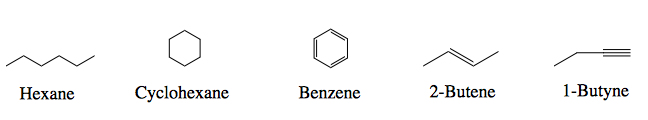
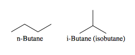
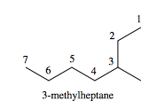

• Hydrocarbons are molecules that only contain carbon and
hydrogen bonds. Below are some examples.

• Each molecule fits into a functional group category that is
listed below the name.
• Molecules names are generated based on their functional
class.
• Alkanes can be drawn in straight chains or in branched chains,
if long enough.
• The many different branched alkanes generated are called
constitutional isomers.

• The molecular formula for each isomer is the same (C4H10) but
the connectivity is different.
• Alkanes that are missing a hydrogen to be complete have the
–yl ending.
• Alkyl groups are substituent groups. Below we can see methyl
is a substituent of the R compound (R represents any
compound).
<%= image_tag "ch203-methane and methyl.png", size: "220x80",
class: "center-img" %>
• Follow these rules to name these molecules.
• Step 1: Identify the longest continuous carbon chain
• Step 2: All other carbons will be substituents that end in
–yl
• Step 3: Number the chain in the direction that gives the
slowest substituent position
• Step 4: Write the name formula: alkyl pos. + alkyl name +
continuous chain name

• Alkanes are generally unreactive and often used as solvents
for you reactants.
• Alkanes have low melting points.
• Alkanes also have low boiling points.
• Soluble in nonpolar solvents due to weak induced dipole
intermolecular forces (the “like dissolves like” concept).
• Branched alkanes have lower boiling points than linear alkanes
because they have less surface area available for intermolecular
force (IMF) interactions. Less stacking results in weaker IMFs
holding the molecules together in phase.
• Branched alkane isomers are more stable than the linear
isomers.
• Alkanes are stable molecules.
• Branched alkanes expend less energy than linear alkanes when subjected to combustion due to their stability.